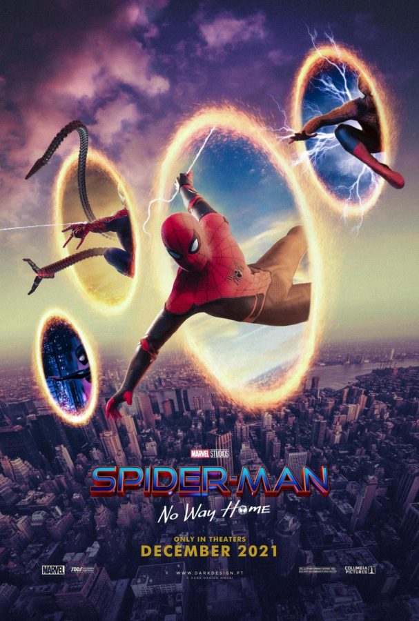
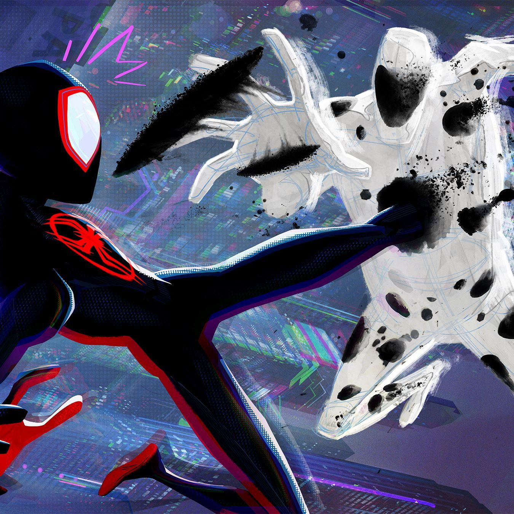

SPIDERMAN (2002)
GENRE: Superhero Film RUNTIME: 121 minutes ROTTEN TOMATOES: 90%
|
The original Spiderman origin story, this film captures the riveting backstory of Peter Parker (Tobey Maguire), a meek and shy STEM teenager who accidentally acquires superhuman abilities after being bitten by a radioactive spider. As he gradually learns to master his newfound abilities, he takes on the persona "Spiderman" and begins to combat crime in his city after losing his uncle to a preventable crime. Over the course of the film, Spiderman learns his most important lesson - with great power, comes great responsibility. |

SPIDERMAN: No Way Home (2021)
GENRE: Superhero Film RUNTIME: 148 minutes ROTTEN TOMATOES: 93%
|  |
In this daring film, our young Peter Parker (Tom Holland) teams up with Dr. Steven Strange (Cumberbatch) to help handle the problematic results of Far From Home where his secret identity as Spiderman is revealed to the world. However, the spell goes terribly wrong and Parker's world is thrown into further chaos as mysterious villains from other dimensions begin to appear and target those Spiderman holds most dear. |
SPIDERMAN: Across The Multiverse (2023)
GENRE: Superhero Film RUNTIME: 140 minutes ROTTEN TOMATOES: 95%
|  |
A bold and colorful sequel to Spiderman: Into the Multi-verse, this film builds on the vibrant multi-verse world with our hero Miles Morales (Shameik Moore) going on a new adventure alongside Gwen Stacy (Steinfeld) the Spider Society, a group of Spider-People led by Miguel O'Hara / Spider-Man 2099 (Oscar Isaac). While on this journey, Spiderman (Miles Morales) uncovers painful truths about his own origin story and the burdensome destiny every spiderman faces. |